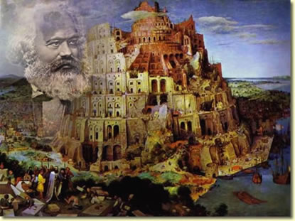

El conocimiento de elementos teóricos utilizados en los estudios soci ales es un instrumento indispensable para la comprensión de los procesos sociales, por este motivo para introducirnos al estudio del Entorno socioeconómico de México, es preciso que estudiemos algunos enfoques teóricos. En la filosofía hay dos grandes elem entos que son el ser y la conciencia. El ser se refiere al mundo, la materia, la naturaleza, las sociedades... y la conciencia corresponde a todo lo intangible, a las ideas, “el alma”, las concepciones, el pensamiento, etc., en pocas palabras se refiere a nuestras representaciones mentales. El filósofo alemán Carlos Marx para estudiar a la sociedad utilizó el término de materialismo pues estableció que la materia es lo primero y la conciencia es un producto de la materia. Los materialistas afirman que el mundo es cognoscible. Podemos decir que el materialismo es una concepción moderna, científica y verdadera del universo. Es un leal auxiliar de la ciencia y de todas las actividades prácticas que ejecuta el hombre.
Es la filosofía ma rxista. Es materialista porque al responder al problema fundamental de la filosofía, sostiene que la materia, el ser, es lo esencial; y la conciencia, lo accesorio. Señala que el mundo es material y cognoscible, concibe al universo tal como lo es en realid ad; juzga que el mundo material está en movimiento, desarrollo y cambio constante (permanente).
El materialismo dialectico estudia las leyes del movimiento en:
Para saber mas sobre Karl Marx, puedes consultar el siguiente material:
Parte 1 Parte 2Estudia las leyes generales de la sociedad y el pensamiento humano. Es materialismo histórico porque para estudiar a la sociedad comienza por las condiciones materiales de existencia. Establece que la base de toda sociedad es la producción material, ya que antes de hacer arte, religión o lo que sea el hombre debe satisfacer sus necesidades materiales. Para ello debe trabajar, o sea, producir y este es el primer hecho histórico. El materialismo histórico implica que la sociedad y sus instituciones están sujetas a cambios constantes. Las sociedades tal y como existen son formaciones económico sociales en las cuales, a través de la observación científica, pueden encontrarse distintos elementos ordenados.
